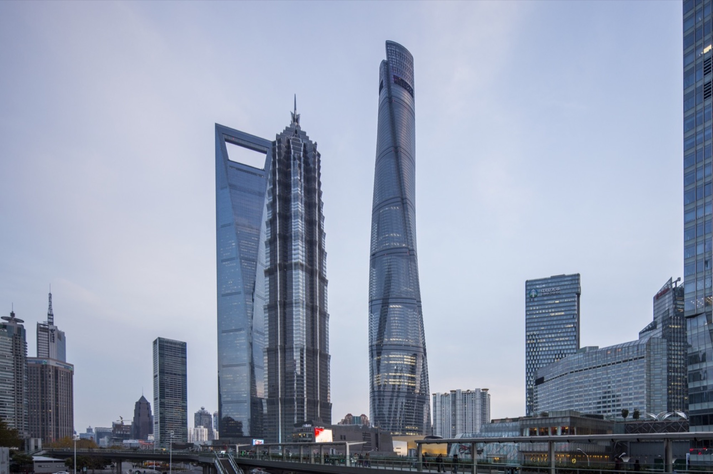
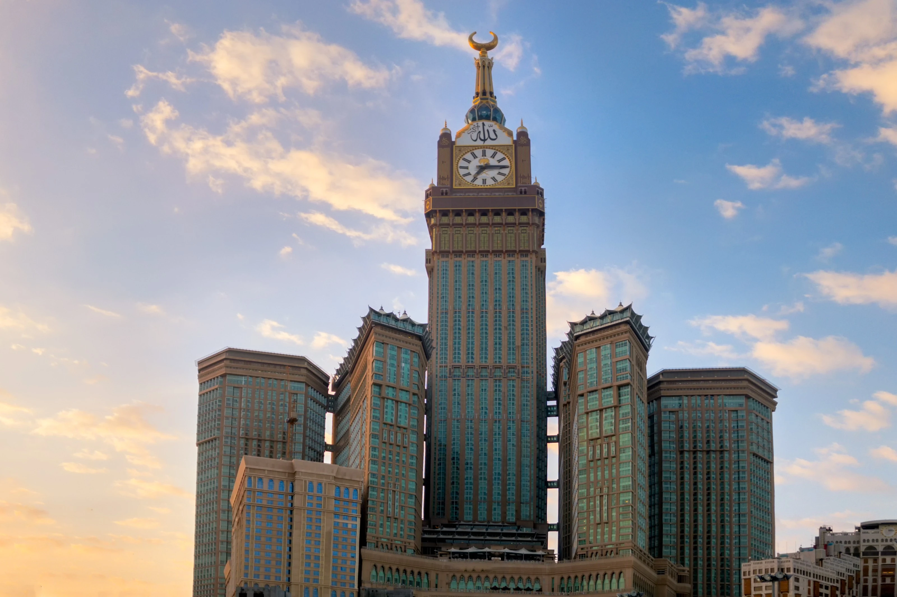

Top 5 Tallest Buildings in the World
Welcome to our resource section, where you can find additional information about the world's tallest buildings. We've curated a list of books, documentaries, and images to help you delve deeper into the history, architecture, and engineering behind these incredible structures. Explore and learn with our recommended resources.

Burj Khalifa
| Height:828m | Year:2010 | Location: Dubai, UAE |
|---|
Not only is Burj Khalifa the world's tallest building but it has also broken two other impressive records: tallest structure, previously held by the KVLY-TV mast in Blanchard, North Dakota, and tallest free-standing structure, previously held by Toronto's CN Tower. The Chicago-based Council on Tall Buildings and Urban Habitat (CTBUH) has established 3 criteria to determine what makes a tall building tall. Burj Khalifa wins by far in all three categories. Click to read more..
Background
Also known as the Burj Dubai prior to its inauguration in 2010, is a skyscraper in Dubai, United Arab Emirates. It is known for being the world's tallest building. With a total height of 829.8 m (2,722 ft, or just over half a mile) and a roof height (excluding antenna, but including a 242.6 m spire[2]) of 828 m (2,717 ft), the Burj Khalifa has been the tallest structure and building in the world since its topping out in 2009, supplanting Taipei 101, the previous holder of that status.[3][4] Construction of the Burj Khalifa began in 2004, with the exterior completed five years later in 2009. The primary structure is reinforced concrete and some of the structural steel for the building originated from the Palace of the Republic in East Berlin, the former East German parliament.[5] The building was opened in 2010 as part of a new development called Downtown Dubai. It was designed to be the centerpiece of large-scale, mixed-use development. The decision to construct the building was based on the government's decision to diversify from an oil-based economy, and for Dubai to gain international recognition.[citation needed] The building is named in honor of the former president of the United Arab Emirates, Khalifa bin Zayed Al Nahyan.[6] Abu Dhabi and the UAE government lent Dubai money to pay its debts. The building broke numerous height records, including its designation as the tallest building in the world.Learn more at wikipedia

Merdeka 118
| Height:678.9m | Year:2023 | Location: Kuala Lumpur, Malaysia |
|---|
It is the tallest building in Malaysia and Southeast Asia. It surpassed the 453.6 m (1,488 ft) Exchange 106 to become the tallest building in Malaysia and surpassed the 461.2 m (1,513 ft) Landmark 81 to become the tallest building in Southeast Asia, taking these titles by virtue of its 160 m (520 ft) tall spire.[12] The building will also be the first in Malaysia to receive a triple platinum rating from worldwide sustainability certifications, including Leadership in Energy and Environmental Design (LEED).[12] Click to read more..
Background
The Merdeka 118 (the whole precinct's) development is a 19-acre land funded by Permodalan Nasional Berhad (PNB),[13][14] with a budget of RM5 billion (US$1.21 billion).[15] When completed in 2023,[16] the tower will be the tallest building in Malaysia. It is planned to be constructed in three phases and will consist of 400,000 square metres (4,300,000 square feet) of residential, hotel and commercial space.[17]wikipedia
Design
The building is designed with a mixture of diamond-shaped glass facades to signify the diversity of Malaysians. The design was made to resemble and inspired by Tunku Abdul Rahman's outstretched hand gesture while chanting "Merdeka!",[24] when he proclaimed the independence of Malaysia on 31 August 1957. The building's cladding will comprise 18,144 panels, 114,000 square-meter of glass, and 1,600 tonnes of window frame extrusions. It will contain the 118 Mall, Grade-A offices, hotels, and residential areas. The structural engineers are Leslie E. Robertson Associates and Robert Bird Group while the civil and structural engineer of record for this tower is Arup.[25][26] The building will be equipped and illuminated at night with 8.4 km of LED light strips which would gradually move from one corner to another.[27] The Neapoli Group, an environmental design and engineering firm, was employed to provide consultancy services towards achieving platinum rating with three Green Building certification bodies: Leadership in Energy and Environmental Design (LEED), Green Building Index and GreenRE.[28] wikipedia

Shanghai Tower
| Height:632m | Year:2015 | Location: Shanghai, China |
|---|
Designed by international design firm Gensler and owned by the Shanghai Municipal Government,[2] it is the tallest of the world's first triple-adjacent supertall buildings in Pudong, the other two being the Jin Mao Tower and the Shanghai World Financial Center. Its tiered construction, designed for high energy efficiency, provides nine separate zones divided between office, retail and leisure use.Click to read more..
Background
The Merdeka 118 (the whole precinct's) development is a 19-acre land funded by Permodalan Nasional Berhad (PNB),[13][14] with a budget of RM5 billion (US$1.21 billion).[15] When completed in 2023,[16] the tower will be the tallest building in Malaysia. It is planned to be constructed in three phases and will consist of 400,000 square metres (4,300,000 square feet) of residential, hotel and commercial space.[17]
Design
The Shanghai Tower was designed by the American architectural firm Gensler, with Shanghainese architect Jun Xia leading the design team.[48][49] The tower takes the form of nine cylindrical buildings stacked atop each other that total 128 floors, all enclosed by the inner layer of the glass facade.[5] Between that and the outer layer, which twists as it rises, nine indoor zones provide public space for visitors.[5][50] Each of these nine areas has its own atrium, featuring gardens, cafés, restaurants and retail space, and providing panoramic views of the city.[51]wikipedia

Abraj Al-Bait Clock Tower
| Height:601m | Year:2012 | Location: Mecca, Saudi Arabia |
|---|
LThe building complex is 300 metres away from the world's largest mosque and Islam's most sacred site, the Great Mosque of Mecca.[6] The developer and contractor of the complex is the Saudi Binladin Group, the Kingdom's largest construction company.[4] It is the world's second most expensive building, with the total cost of construction totalling US$15 billion.Click to read more..
Design
The building is topped by a four-faced clock, visible from 25 kilometres (16 miles) away. The clock is the highest in the world at over 400 m (1,300 ft) above the ground, surpassing the Allen-Bradley clock tower in Milwaukee. The clock faces are the largest in the world, surpassing the Cevahir Mall clock in Istanbul.
Clock
The project uses clock faces for each side of the main hotel tower. The total height of the clock is (187 ft), just below the media displays under the clock faces. At 43 × 43 , these are the largest in the world. The roof of the clock is 1988 ft (606 m) above the ground, making it the world's most elevated architectural clock. A spire has been added on top of the clock giving it a total height of 640 m 2099 ft . Behind the clock faces, there is an astronomy exhibition.wikipedia

Ping An International Finance Centre
| Height:599.1m | Year:2017 | Location: Shenzhen, China |
|---|
It was completed in 2017,[1] becoming the tallest building in Shenzhen, the 2nd tallest building in China and the 5th tallest building in the world.[9][4] It also broke the record of having the highest observation deck in a building at 562 m (1,844 ft).[2] It is the second largest skyscraper in the world by floor area after Azabudai Hills Main Tower in Tokyo, Japan.Click to read more..
Background
The building is located within the Central Business District of Shenzhen in Futian. Its 18,931 square meter lot was purchased by Ping An Group via auction at a price of 1.6568 billion RMB on 6 November 2007. Design of the building began in 2008 with Kohn Pedersen Fox Associates providing the architectural design and Thornton Tomasetti providing structural design.[4] Its foundation stone was laid on 29 August 2009, and construction started in November the same year. China Construction First Building Group was hired as the general contractor to construct the building.[4]
Design
The building contains office, hotel and retail spaces, a conference center, and a high-end shopping mall. An observation deck named Free Sky is located on floor 116.[13] As its name suggests, it is also the headquarters of Ping An Insurance. The design of the building is meant to be unique and elegant, and to represent the history and achievements of the main tenant. A stainless-steel facade that weighs approximately 1,700 metric tons provides a modern design to the building.[4]wikipedia